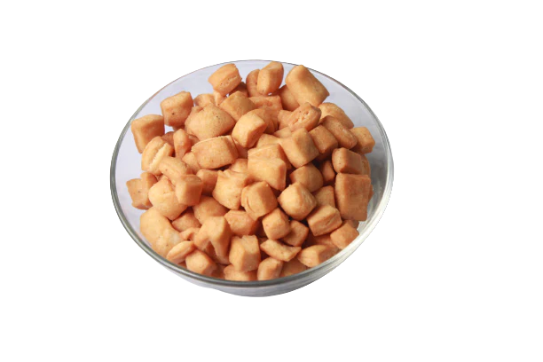

Conan's Guide to Making perfect Chin-Chin
Foolproof Guide to making Chin-Chin
By Conan, Updated (21-02-2025)

Ingredients
- 5 ounces (150ml) whole milk
- 1 teaspoon (5ml) vanilla extract
- 14.1 ounces all-purpose flour (400g; 3 cups plus 2 tablespoons)
- 3.5 ounces sugar (100g; 1/2 cup)
- 1 1/2 teaspoons (6g) baking powder
- 1 teaspoon (3g) Diamond Crystal kosher salt; for table salt use half as much by volume or the same weight
- 2 teaspoons (4g) freshly grated lemon or orange zest
- 1/2 teaspoon freshly grated nutmeg
- 3.6 ounces unsalted butter (100g; 7 tablespoons), cold
- 2 quarts (1.9L) vegetable oil, for frying
Directions
- In a small bowl, whisk together milk and vanilla extract unit well combined and set aside
- In a large bowl, whisk together flour, sugar, baking powder, salt, zest, and nutmeg until thoroughly combined. Using the large holes of a box grater, grate butter over flour mixture. Using your hands, toss butter with flour mixture until butter is evenly distributed.
- In the center of the butter-flour mixture, make a well about 4-inches wide. Slowly pour milk mixture into the well. Using a flexible spatula or wooden spoon, gradually stir butter-flour mixture into milk mixture until combined. Using your hands, knead dough against sides of bowl or on a lightly-floured work surface until it comes together in a soft, but not sticky, ball. Cover dough with plastic wrap or a clean kitchen towel and rest for 10 minutes. (Alternatively, shape dough into a flat, round disk, wrap tightly in plastic wrap, and refrigerate for up to 2 days or freeze for up to 6 months; bring to room temperature before rolling).
- On a lightly-floured work surface, divide dough into 4 equal portions (about 195g each), and shape each into a ball. Working with one ball of dough at a time, roll out dough to form a 5-inch circle about 1/4 inch thick, adding more flour as needed underneath and on top of dough to prevent sticking. Using a sharp knife or pizza wheel, cut dough into 1/2-inch-wide diamonds, dipping the wheel or knife in flour as needed to keep dough from sticking. Transfer dough pieces to a lightly floured rimmed baking sheet, dust with flour, and gently toss to prevent sticking. Repeat with remaining dough balls.
- Line a large strainer with paper towels. In a wok or large Dutch oven, heat oil over medium-high heat to 360°F (180°C). Divide the dough pieces into roughly 3 or 4 batches. Working with one batch of dough pieces at a time, add pieces to hot oil using a spider or slotted spoon and fry, turning pieces as they cook, until golden brown on both sides, about 3 minutes. Transfer chin chin to prepared strainer.
- Return oil to 360°F (180°C) and repeat frying with remaining batches of dough. Transfer chin chin to a serving bowl and serve warm or let cool completely, about 15 to 20 minutes.